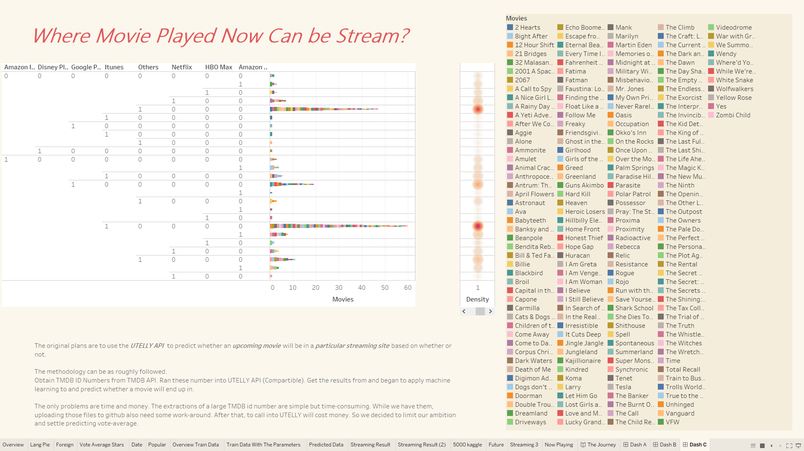
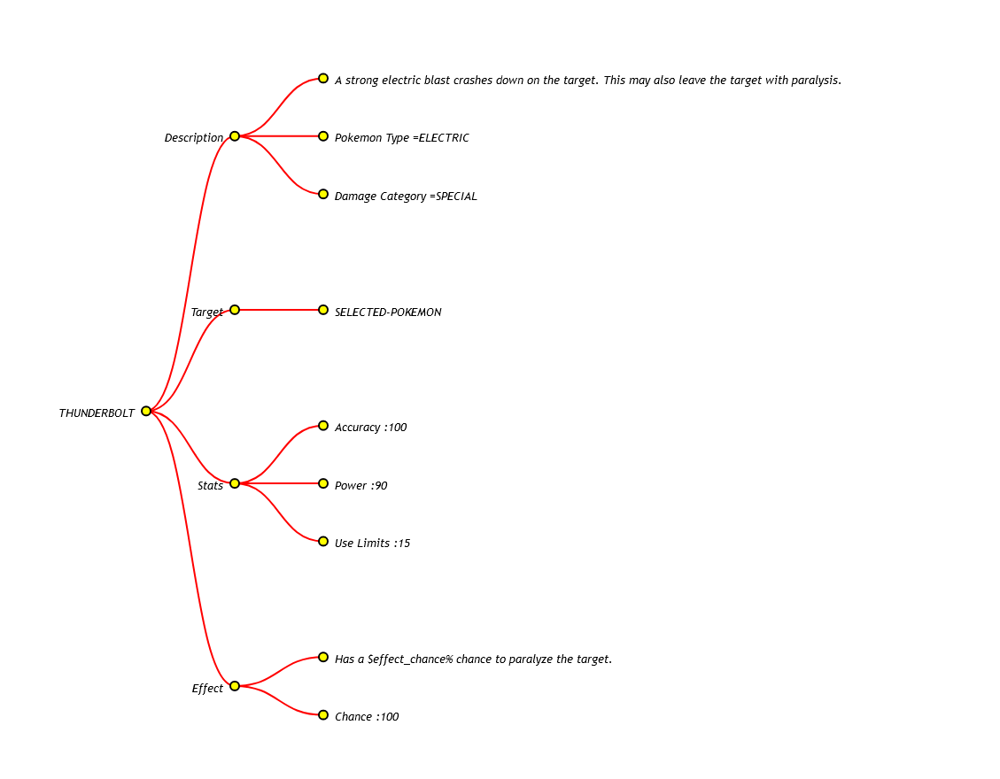
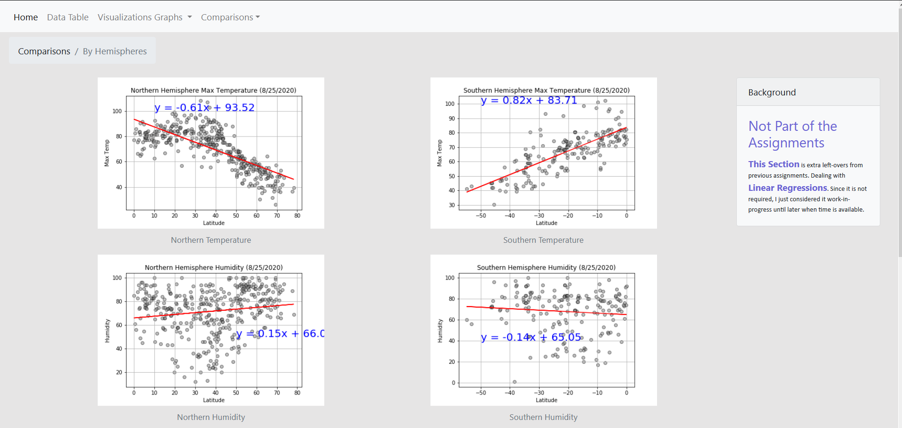
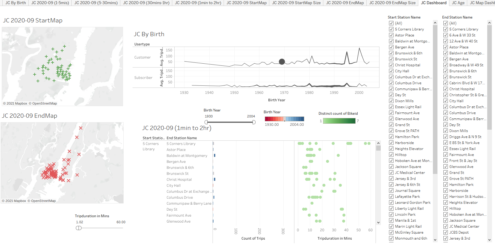

The group objective is to use machine learning for several datasets obtained and applied machine-learning to predict which sites new movies may show up in.
My responsibilities are creating algorithms to extract information from multiple sources for several hundred of thousands of movies and create all visualizations in a limited time.
Tools / languages used: Python (Pandas, Json, SKlearns, Numpy), Github, Tableau.
The group's objective is to extract and transform datas from an API into a website that acts as archives/navigation tools for enthusiasts for Pokemon series.
Created a hierarchy tree in order for those interested in what a character is able to do in a limited time, using live-search functions and interactiveness.
Tools / languages used: Javascript (D3, Bootstrap4), Github.
I create a site to navigate and view weather data for cities around the globe.
I used freely available tools to extract and transform data to more readable charts.
Tools / languages used: Python (Pandas, JSON, Matplotlib), Javascript (Bootstrap4).
This project is to analyse and visualize customers of an app for Citi Bikes. The Dashboard, Maps and Sheets are to discover and answer questions in which the app may improve.
This data came from September 2020. It would work fine with any data after that, provided the metric.
Tools / languages used: Tableau.

(+) Python, Javascript, SQL, HTML, CSS, R.
Including libraries: Pandas, Flasks, D3, Leaflet, Matplotlib, SKlearns.
(+) Data Analysis, Modeling, Visualization, Cleaning.
Extract, Transfer, Load with API Calls, Web Scraping, Structured or Unstructured Database, Machine Learning, RestAPI and others.
(+) Data, Cloud and Other Coding Softwares:
Tableau, IBM Guardium, Splunk, Microsoft PowerBI, Anaconda Jupyter Lab, Postgres SQL, Visual Code, Google Collab.
(+) Industrial Robots: KUKA, ABB, Staubli, TGW Stingrays.
(+) Read and understand schematic diagrams of electrical circuits, PLC programs and other industrial diagrams and blueprints.
Created industrial work orders and work instructions.
(+) PLC and Other Industrial Programs: Allen Bradley, Siemens TIA3, DirectLogix. NI MultiSims, Intelligrated BOSS, TGW SAV.
(+) Monitor and maintain six data centers using IBM Guardium covering 15,000 appliances. Search, troubleshoot, restart, analyse, and remove inactive and problematic appliances, using daily reports, data dashboards from Splunk and Guardium in order for operation stability.
(+) Collaborate with different teams from different timezones, with Scrum and Agile mindset, in order to find and fix problems. Participate in migrations to new softwares and decommissioning old ones.
(+) Install new patches, updated software version to maintain cybersecurity level. Continous learning on cloud structures and updated skillsets to fulfill company needs.
(+) Optimize, troubleshoot, and repair automation and robotic systems (AS/RS) using diagnostics tools and problem-solving skills. Find tools, software or schematics in order to do so. Sometimes, I made it myself.
(+) Point engineers to where and how problems came to exist and also providing solutions on how to remove them. This helps them extensively in programming 175+ robots and other automated devices.
(+) Writing detailed and concise reports with data analysis to management. Resulted with greatly increased output for the robotic work capacity and operation duration.
(+) Assisted in preventive maintenance and other associated tasks including quality audits, documentations and writing work instructions. Often, participating in brainstorming sessions on improving the skills of our team, the effectiveness of our methods.
(+) Also, trained newcomers and old-school mechanics on how a particular system works.
(+) Due to my work ethics and the support of my team, we managed to save the company 250,000 USD, in shutting down an air compressor for the pneumatic systems along with other achievements.
(+) Created and informed the schedule to the cast and crew. Communicated to the director, cast and crew on
the next steps of filming and any changes of plan. Acted as the timekeeper.
(+) On call for any unexpected new tasks that pop up during the production.
(+)Also responsible for the role of
Floor Runner, Prop Manager and Continuity Manager.
(+) Did manual tasks such as carrying props and
filming equipment.
Filled in for any crew and cast member who was unavailable.